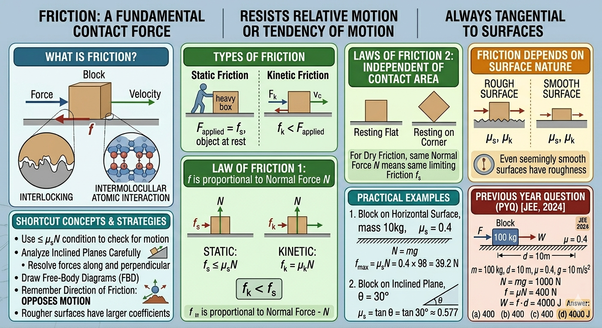

Static and Kinetic Friction and Laws of Friction

Image generated by Google AI
What Is Friction?
Imagine trying to push a heavy box across the floor or walking on a slippery path. That resistance you feel? That’s friction at work. Friction is one of those fundamental forces that sneak into every corner of our daily lives and physics experiments. At its core, friction is a contact force that resists the relative motion, or even the tendency of motion, between two surfaces in contact. Unlike forces such as gravity or tension, which pull or push along a straight line, friction always acts tangentially along surfaces, opposing sliding or impending motion.
Without friction, walking would be like skating on ice, cars wouldn’t grip roads, and even holding a pen might be impossible. So, in essence, friction is what allows us to interact with the physical world safely and effectively.
Types of Friction
Friction comes in two main flavors:
- Static Friction: This is the “stay-put” friction. It acts when an object is at rest relative to the surface. It’s the reason your coffee mug doesn’t slide off the table. Static friction adjusts itself to match the applied force up to a maximum threshold. For example, when you try to push a stubbornly heavy box and it refuses to budge at first, that is static friction flexing its muscles.
- Kinetic (Sliding) Friction: Once the object finally gives in and starts moving, static friction steps aside, and kinetic friction takes over. This force opposes motion while sliding. Interestingly, kinetic friction is generally weaker than the maximum static friction, which is why keeping an object moving is often easier than starting it in the first place.
Laws of Friction
Friction might seem mysterious, but it follows five empirical laws that simplify our understanding:
- Frictional Force is Proportional to the Normal Force: The frictional force \( f \) depends directly on the normal force \( N \), the perpendicular push between the surfaces. This is why heavier objects usually experience more friction. For static friction:
- Static Friction Adjusts Up to a Maximum: Static friction is not fixed, it rises with the applied force until it hits \( \mu_s N \). Push harder than this limit, and the object starts moving.
- Kinetic Friction is Constant and Less Than Static Friction:
- Friction is Independent of Contact Area: For dry friction (no lubrication), the size of the contact area doesn’t affect the force. It’s a bit counterintuitive, but explained by microscopic contact points where surfaces actually touch.
- Friction Depends on Surface Nature: The texture and material type of surfaces directly influence \( \mu_s \) and \( \mu_k \), explaining why sandpaper is grippier than polished glass.
and for kinetic friction:
Here, \( \mu_s \) and \( \mu_k \) are the coefficients of static and kinetic friction, representing how “sticky” the surfaces are.
Key Concepts and Definitions
- Normal Force (N): The perpendicular push a surface exerts on a resting object, balancing the object’s weight component perpendicular to the surface.
- Coefficient of Static Friction (\( \mu_s \)): Represents how “sticky” surfaces are at rest; the ratio of maximum static friction to normal force.
- Coefficient of Kinetic Friction (\( \mu_k \)): Measures resistance during motion; the ratio of kinetic friction force to normal force.
- Limiting Friction: The peak static friction just before motion begins.
- Frictional Force Direction: Always opposes relative motion or the potential for motion, not necessarily the direction of the applied force.
Understanding Friction Through Equations
Static friction follows the inequality:
This means friction can rise with your applied push until it hits the maximum \( \mu_s N \). Push harder than this, and the object starts to slide.
Kinetic friction, once motion has started, stays constant:
That is why moving a stationary object often feels harder than keeping it moving, once surfaces stop interlocking, less force is needed to maintain motion.
Shortcut Concepts for Quick Problem Solving
- Use the inequality \( f \leq \mu_s N \) to quickly check if an object will stay put or move.
- For inclined planes, balance forces along the slope:
- Friction opposes motion, not necessarily the applied force. Push forward, friction pushes backward; slide backward, friction acts forward.
- Rough surfaces generally have larger friction coefficients, so they resist motion more.
Here, \( \theta \) is the plane’s angle of inclination.
Practical Examples
-
Block on Horizontal Surface
Imagine a 10 kg block sitting on a table. The coefficient of static friction is \( \mu_s = 0.4 \). How much force is needed to just get it moving?
\[ N = mg = 10 \times 9.8 = 98\,\text{N} \]\[ f_{\text{max}} = \mu_s N = 0.4 \times 98 = 39.2\,\text{N} \]So, to nudge this block into motion, you need a force of \( \boxed{39.2\,\text{N}} \). Pretty neat how a simple coefficient tells us exactly how much “oomph” is needed.
-
Block on an Inclined Plane
Suppose a block starts sliding down a slope inclined at \( 30^\circ \). What’s the static friction coefficient?
\[ \tan \theta = \mu_s \]\[ \mu_s = \tan 30^\circ = \frac{1}{\sqrt{3}} \approx \boxed{0.577} \]
Why Does Friction Occur?
Friction arises from the microscopic landscape of surfaces. Tiny bumps, ridges, and asperities interlock, resisting motion. On top of that, weak intermolecular forces between surface atoms add their share of resistance. Even surfaces that look smooth to the naked eye are rough at the microscopic scale, explaining why friction never truly vanishes.
Common Misconceptions About Friction
- Friction Opposes Motion, Not Force: It resists relative motion, not necessarily the applied push.
- Static Friction Isn’t Always Maximum: It varies, adjusting to the applied force up to its limit.
- Kinetic Friction is Less Than Static: Easier to keep moving an object than to start it moving; surfaces don’t lock together as much once sliding.
- Surface Area Doesn’t Affect Dry Friction: Counterintuitively, friction depends on the normal force and surface roughness, not on how much of the object is touching the surface.
Additional Insights on Friction
- Rolling Friction: Unlike sliding, rolling friction occurs when objects roll over a surface. It’s much smaller, which is why wheels make transportation efficient.
- Lubricated Surfaces: Adding oil or grease reduces friction by introducing a fluid layer, shifting from dry to fluid friction.
- Friction and Heat: Energy isn’t lost, it’s converted. Friction transforms mechanical energy into heat, making moving parts warm up.
- Friction in Machines: Excess friction wears parts and wastes energy. Engineers strive to reduce it in engines, bearings, and gears to improve efficiency and longevity.
Strategies for Solving Friction Problems Quickly
- Always draw Free-Body Diagrams (FBDs) to visualize all forces, especially friction and normal force.
- Check motion conditions using \( f_{\text{max}} = \mu_s N \) to see if objects remain at rest or start moving.
- Analyze inclined planes carefully by resolving forces along and perpendicular to the slope.
- Keep track of friction direction, it always opposes motion or impending motion.
Previous Year Questions (PYQs)
Q1.
A block of mass \( 100\,\text{kg} \) slides over a distance of \( 10\,\text{m} \) on a horizontal surface. If the coefficient of friction between the surfaces is \( 0.4 \), then the work done against friction (in J) is: (JEE 2024)
Options:
- \( 3900\,\text{J} \)
- \( 4500\,\text{J} \)
- \( 4200\,\text{J} \)
- \( 4000\,\text{J} \)
Solution:
- Given:
- Normal force on horizontal surface:
- Frictional force:
- Work done against friction:
Answer: \( \boxed{4000\,\text{J}} \)